Spells |

|
 Spells |
 Spells |
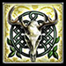 Spells |
 Spells |

|

|
 Spells |
 Spells |

|
 Spells |
 Spells |
 Spells |
|---|
| Class | Artificer - Dog | Barbarian | Bard | Cleric | Druid - Wolf | Favored Soul | Fighter | Monk | |||||||||||||
|---|---|---|---|---|---|---|---|---|---|---|---|---|---|---|---|---|---|---|---|---|---|
| AT | BE | FB | OS | Rav | SB | SS | WC | DD | RS | War | NW | SH | AoV | War | Ken | StD | Van | HeM | NiS | Shi | |
| Paladin | Patron | Ranger | Rogue | Sorcerer | Warlock | Wizard | |||||||||||||||
| KotC | SaD | Van | Har | AA | DWS | Tem | Ass | Mec | TA | Air | Earth | EK | Fire | Water | ES | SE | TS | AM | EK | PM | |
| Free to Play | Drow ? | Dwarf | Elf - AA | Halfling | Human |
|---|---|---|---|---|---|
| Premium Races | Dragonborn | Gnome | Half-Elf - AA | Half-Orc | Warforged |
| Iconic Heroes | Bladeforged | Deep Gnome | Morninglord - AA | PDK | Shadar-kai |
| General | Epic | Past Life | ||||||||||
|---|---|---|---|---|---|---|---|---|---|---|---|---|
Class |
 Dragonmark |
(General) |
Metamagic |
Racial |
Deity |
Epic |
Destiny |
Legendary |
Heroic |
Racial |
Epic |
Iconic |
| Weapons | Armor | Shields | ||||||||
|---|---|---|---|---|---|---|---|---|---|---|
| 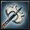 Weapons |
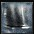 Heavy |
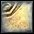 Medium |
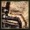 Light |
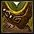 Cloth |
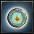 Docents |
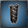 Tower |
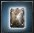 Large |
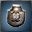 Small |
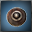 Bucklers |
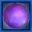 Orbs |
| Accessories | ||||||||||
|---|---|---|---|---|---|---|---|---|---|---|
| 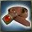 Belts |
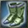 Boots |
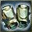 Bracers |
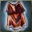 Cloaks |
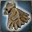 Gloves |
Goggles |
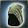 Helms |
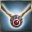 Necklaces |
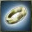 Rings |
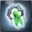 Trinkets |
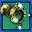 Rune Arms |
Basic Weapons, Armor, Shields | Augments (Purchasable) | Weapons: Unusual Mods, Enhanced Crit Profile, Swashbuckling | Named Item Sets